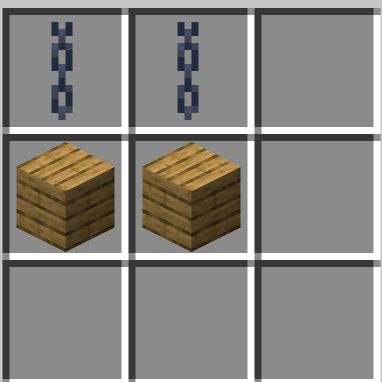
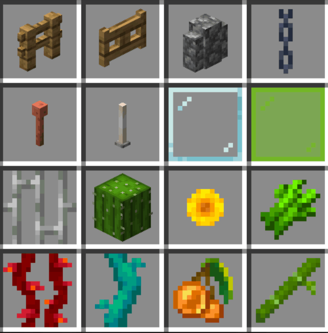
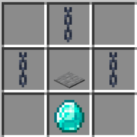
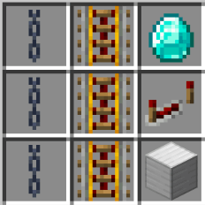
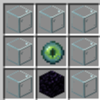
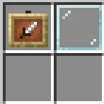
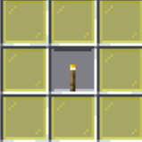
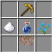

AI Website GeneratorДля счастливых ластов, лошадей и наутилусов добавлена механика призыва, примерно как в The Witcher. Вам понадобиться раздобыть козий рог. Переименуйте свой маунт через бирку, а затем возьмите рог в руку и на приседе, вблизи питомца смотрите на него. Рог в вашей руке должен зачароваться и изменить название на кличку питомца. Чтобы призвать транспорт - подуйте в рог. (Будьте осторожны, чтобы не призвать питомца в блоки.)
Как вы знаете, в ванильной игре касты довольно медленные, но мы это исправили! Теперь вы можете использовать на упряжке гаста специальное зачарование Swift Fly от 1 до 3 уровня. Оно ускоряет вашего гаста на 40% 60% и 80%, в зависимости от уровня зачарования. Позволяя каждому контролировать необходимый максимум скорости. Данное зачарование можно получить через специальный крафт на наковальне. Для получения вам понадобиться:
1-й уровень: зелье стремительности + обычная книга
2-й уровень: незеритовое улучшение + книга 1-го уровня
3-й уровень: незеритовое улучшение + книга 2-го уровня
Для быстрого перемещения домой, вы можете воспользоваться Зельем Возврата. Вам необходимо установить точку возрождения с помощью кровати, к ней зелье вас и будет перемещать при использовании. Вам понадобится бутылочка воды, подсолнух и сырой лосось, выставьте их в ряд соответственно.

Для начала вам понадобиться создать специальную станцию канатов. При создании канатов, вы можете выбрать степень провисания, то на сколько сильно будет провисать канат.
Вы можете так же повесить некоторый декор на канат: Фонари, аметисты медные големы и даже надписи.

Все представленные предметы могут быть материалом для каната или троса.

Для того чтобы покатиться по канату под действием силы гравитации, вам необходимо создать Зиплайн Пад. Его вы должны установить под канат на расстоянии до 3-х блоков. Встав на плиту, вас посадят на канат, и вы покатитесь вниз под действием гравитации.

С этим улучшением на канате, вы сможете направить движение в нужно направлении, чтобы например катиться вверх вопреки гравитации. для этого вам необходимо создать на верстаке это улучшение, и установить его на канат на каждую его якорную точку, в нужном направлении.




Теперь вы можете не только сжимать в блоки лёд, нарост и нитки. Теперь вы можете и разжать их обратно. Это упрощает хранение Льда, наростов и ниток
Кожа - переплавьте в печи гнилую плоть
Чёрный краситель из каменного и древесного угля
Энерго рельсы из меди
Теперь вы можете создавать грязь и бетон прямо в котле! Залейте котёл водой и бросайте в него землю и сухой бетон
Теперь камне рез расширяет свой функционал. Он научился разделывать новые материалы, и расширил список уже имеющихся. Теперь вы можете в нем разделывать и преобразовывать:
Обычные и обтесаные брёвна, доски , Аметисты, глубинный сланец, стекло и медь.
Теперь вы можете скрафтить блоки кораллов из их ростков
Вы можете установить мод Emotecraft, игроки с этим модом смогут увидеть ваши эмоции!
А так же вы можете "пэтать" игроков? установите мод PatPat и сможете "пэтать" игроков!
Теперь выбор материала шаблона на броню имеет смысл! Каждый маатериал дает свой эффект:
Аметист: 0,5 Удача
Медь: 0,75 блокового диапазона взаимодействия
Алмаз: 1.5 брони, 0.5 прочности брони
Изумруд: 1 уровень Героя деревни
Золото: 10% скорость добычи
Железо: 5% урона атаки, 7,5% скорости атаки
Лазурит: на 25% больше опыта от сфер
Незерит: на 10% сокращает время горения
Кварц: +1 безопасная дистанция падения, 15% уменьшенный урон от падения
Редстоун: 5% скорости передвижения, 15% скрытности
Смола: 15% сопротивление отбрасыванию
Вы можете подписать любой предмет командой /sign.
Подписи бывают трёх типов:
обычные (серые)
цветные
редкие градиентные
Чтобы сбросить подпись, используйте /signreset.
Тотем бессмертия теперь выпадает с заклинателя с шансом 15%. Удачи в охоте!
Хотите слушать на сервере свои треки? Используйте команду
/disc burn [ссылка на трек с SoundCloud]
— ваша музыка запишется на пластинку, и её можно будет проигрывать через проигрыватель.
Ссылка на SoundCloud
Бронник на последнем уровне своего развития (мастер) теперь продаёт кузнечные шаблоны за изумруды.
Ассортимент включает все шаблоны, кроме следующих:
Око
Шпиль
Прилив
Тишина
Хранитель
Незеритовое улучшение
Рыло
Ребро
Первый ресурспак предоставляет кучу возможностей! Перейдя по ссылке ниже на сайте вы увидите какой предмет и как его переименовать чтобы получить: Напитки, блюда, различные предметы, вооружение и много чего другого! Не обходите его стороной, он чрезвычайно интересен для игры.
ссылка с переименованиями предметов
Вторым из них является ресурспак на скины для оружия и инструментов.
Ресурсам работает через переименование инструмента определенным названием на наковальне. По ссылке ниже вы сможете увидеть дизайн оружия и его название для использования.
ссылка с переименованиями инструментов
генерация из датапака insendium
мир с кастомной генерацией
ванильный край
AI Website Generator